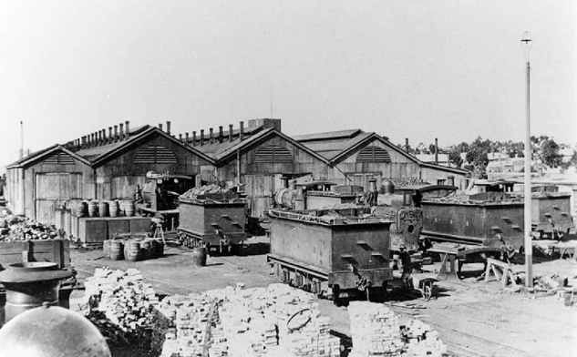
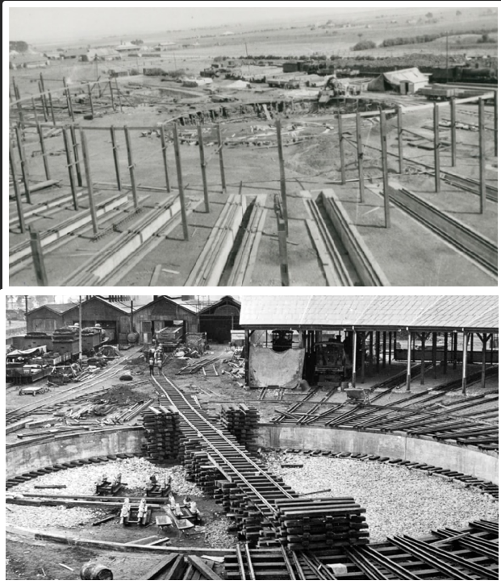
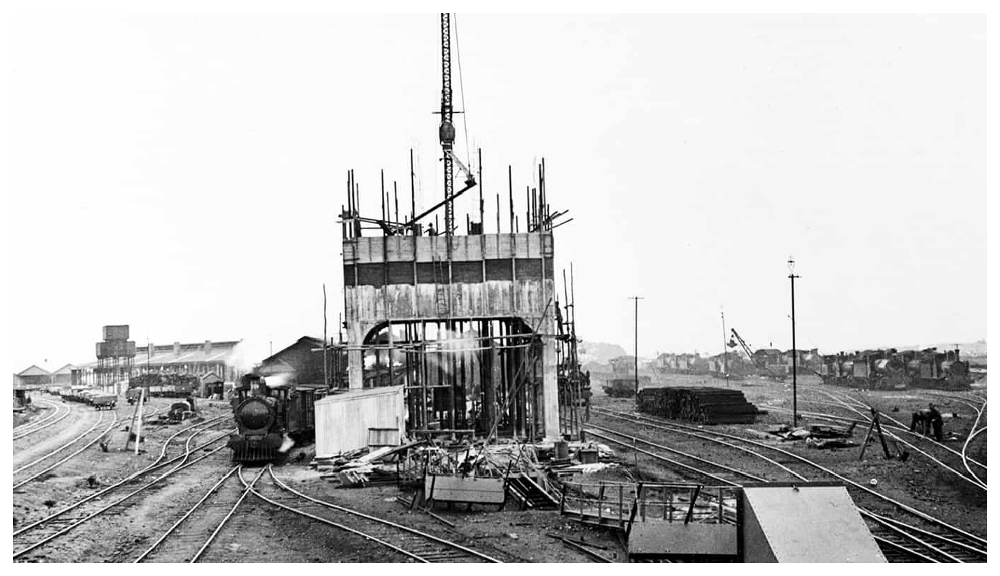
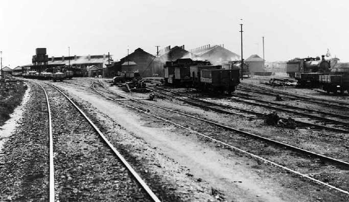
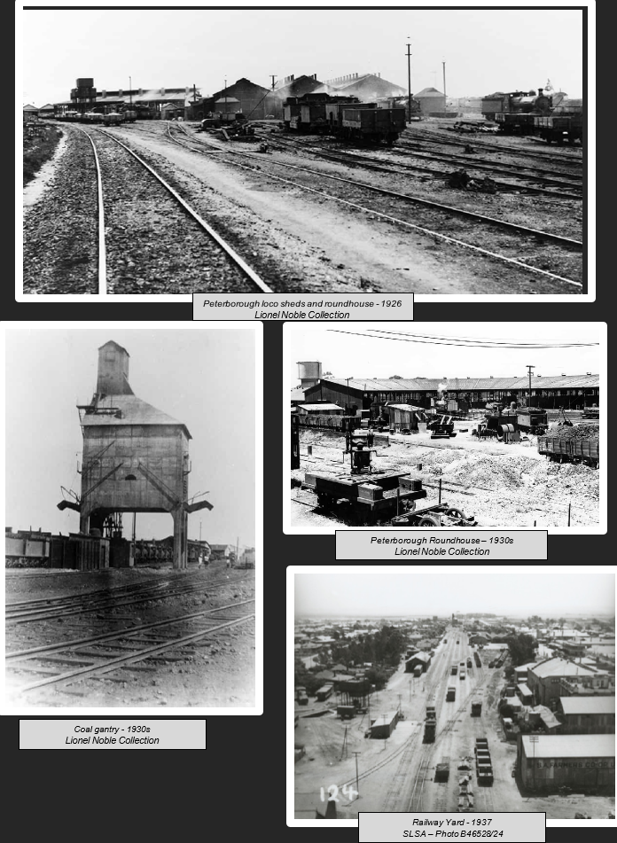

Railway Re-development
Peterborough's identity as a railway town was cemented in the 1920s when the locomotive workshops and yards were completely remodelled, anchored by a new roundhouse and turntable. This history walk explains how the reorganisation of the South Australian Railways under Commissioner W.A. Webb brought new divisions, new buildings and migrant workers to the town, and follows the yards through decades of steam, the arrival of diesel, and the eventual conversion to standard and broad gauge. Historic photographs show the workshops taking shape and in full operation.
The remodelling of the loco workshops and railway yard began in 1924.
With the appointment of American Mr W.A. Webb as Commissioner of Railways in 1922, the South Australian Railway divisions were restructured.
By March 1923 there were six divisions, each with their own superintendent and assistants: Adelaide (C.B. Anderson), Murray Bridge (T.J. Kernot), Quorn (J.P. Makay), Port Lincoln (F. Yeomans), Naracoorte (P.B. O’Malley) and Peterborough (S.R. Watson).
Mr Watson had assistants; A.S. Clayer, C.H. Smith, T.W. Messenger and J.E. Walton. The staff had supervision over lines from Peterborough to Quorn, Peterborough to Terowie, Peterborough to Cockburn and Peterborough to Port Pirie, Gladstone, Brinkworth, Balaklava, Hamley Bridge, Port Wakefield, Wallaroo and Moonta Bay. Eight separate offices were amalgamated into one administration.
Mr Frank Yeomans was appointed Divisional Superintendent at Peterborough in June 1924, a position he held until April 1935.

Petersburg Loco - c. 1920
Photo – Lionel Noble Collection
Migrant workers were brought to the town and lived in tents by the railway reservoir for the work on the railway yards. Many of these men were Greek.
The roundhouse complete with an 85 feet electronically turned turntable was constructed alongside the workshops. The turntable had 23 lines radiating in all directions, with room for an additional 23 lines, each capable of accommodating two engines. Construction of the roundhouse was well on its way with the roof completed by July 1925.
The old running shed which had served as a depot for engines for over 40 years was replaced by a roundhouse and workshops were modernised to be a self-contained narrow gauge repair system.
The updated loco workshops had been equipped with modern engineering machinery capable of repairing all narrow-gauge rolling stock.
A large coal gantry had been erected, along with first aid room, instructional class room and new lavatory and sanitary accommodations.
New railway barracks were built near the Quorn Crossing in 1925 and a dining room for employees was added in 1926. The dining room became the SARI Institute in 1937.
A new office for train control staff was built near the railway station in 1926.
The first diesel engine arrived at Peterborough on 6th February 1963. Standardisation of the Port Pirie to Coburn line from narrow gauge (3 feet 6 inches) to standard gauge (4 feet 8 ½ inches) and Terowie to Peterborough from narrow gauge (3 feet 6 inches) to broad gauge (5 feet 3 inches) was announced and work began in 1964 and was completed by the end of 1969.
The last steam engine ran between Peterborough and Quorn on 9th January 1970. The standard gauge between Port Pirie and Broken Hill was opened on 16th January 1970.

Building of the roundhouse and turntable - 1925
Lionel Noble Collection

Building of the coal gantry - 1926
Lionel Noble Collection

Peterborough loco sheds and roundhouse - 1926
Lionel Noble Collection

1920s to 1930s
Lionel Noble Collection